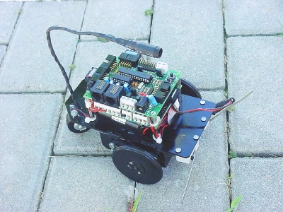

Ahora que tenemos la reprap operativa y podemos diseñar e imprimir nuestras propias piezas, hemos creado un repositorio para la mecánica del skybot. De momento hemos subido los planos en DXF del chásis del robot y de las ruedas.
También hemos creado una lista de correo en googlegroups para hablar sobre el skybot, la skypic, resolver dudas de programación, consultas, etc. Todos los que queráis hablar sobre estos temas estáis invitados.